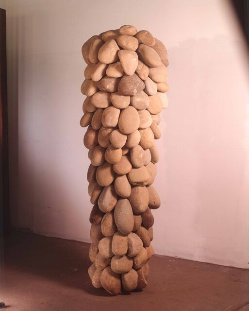

PORTFOLIO
LYRICAL (ENTHIOS STUDIO)
1978–1980
This period marks the beginnings of my explorations as a stone sculptor. The materials were alabaster and the subject matter is traditionally focused on the lyrical line, whether representational or abstract.


ICEHOUSE ABSTRACT GEOMETRIC
1980-1984
This period represents an abandonment of the lyrical in favor of the hard geometric edge unusual in stone sculpture and an engagement with the stone as material especially the color and patterns that alabaster offers.


ARTEFACTOTEM SERIES (STRONG STEEL BUILDING)
1989-1992
After a stint as a professional mover my work transformed in size and materials. No longer carving, I approached stone as purely material and added other common materials to explore ideas and symbols.


MONOPOLYLITH SERIES (STRONG STEEL AND ART CITY)
1992-1995
The Monopolylith series represents approaching stone as purely material from the viewpoint of mass, weight, and density. Using previous techniques of nails and wire and using a wooden armature, these works appear weightless and impossible.


